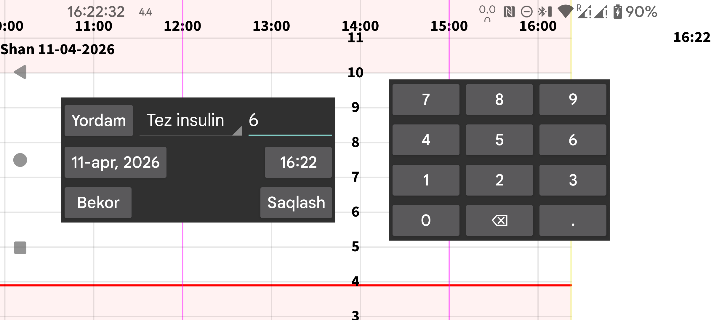

Yangi miqdor oynasi yordamida istalgan yorliq bilan bog‘langan miqdorlarni kiritish mumkin. Yorliqlar chap menyu→Sozlamalar→Miqdor yorliqlari bo‘limida belgilanadi.
Muayyan yorliq bilan kiritilgan miqdorlar grafikda shu yorliq belgilaydigan balandlikda ko‘rsatiladi. Keyinroq miqdorni ustiga uzoq bosib o‘zgartirish mumkin. Uni chap o‘rta menyu→Ro‘yxat bo‘limidagi kiritilgan miqdorlar ro‘yxatidan ham tanlash mumkin.
NovoPen® 6 yoki NovoPen Echo® Plus qalamidan insulin doza ma’lumotlarini NFC qalamni skanerlash orqali ham olish mumkin. Skanerdan so‘ng, dozalar Juggluco ichida qaysi yorliq ostida saqlanishini o‘zgartirish va faqat ma’lum sana-vaqtdan keyingi dozalarni olishni belgilash mumkin.
Agar qalam xotirasida yuzlab doza bo‘lsa, ularning barchasi NFC orqali Juggluco ga kelguncha 30 soniyadan ko‘proq vaqt ketishi mumkin.
Ba’zi qon glyukozasi o‘lchagichlari barmoqdan o‘lchangan qon glyukozasi qiymatlarini Bluetooth orqali Juggluco ga yubora oladi. Qarang: chap menyu→Sozlamalar→Ma’lumot almashish→Glyukoza o‘lchagichlar.
Chap menyu→Sozlamalar→Miqdor yorliqlari bo‘limida qaysi yorliq ovqat uglevodlari uchun ishlatilishi ham ko‘rsatiladi. Shu yorliq uchun Yangi miqdor oynasida Ovqat tugmasi ko‘rinadi. Uni bosganda tarkibiy qismlardan tuzilgan ovqatni kiritish ekrani ochiladi. Keyin uglevod miqdori hisoblanadi yoki aksincha, uglevod miqdori berilib, bitta ingredientning kerakli miqdori hisoblanadi.
Chiqarib tashlash: qon glyukozasi o‘lchovini kalibrlash dan chiqaradi, masalan glyukoza ko‘tarilayotgan yoki pasayayotgan bo‘lsa, yoxud sensor hali qizish davrida bo‘lsa.